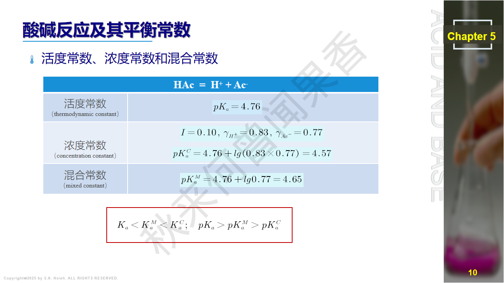
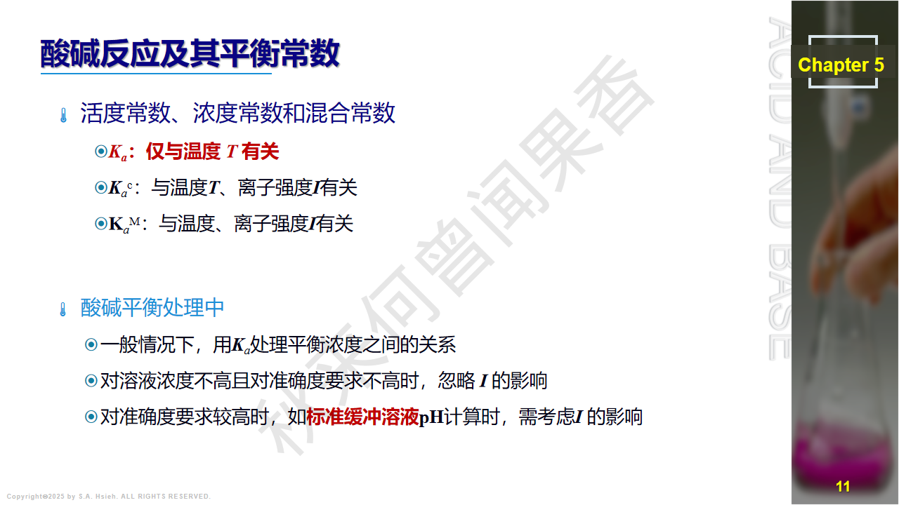
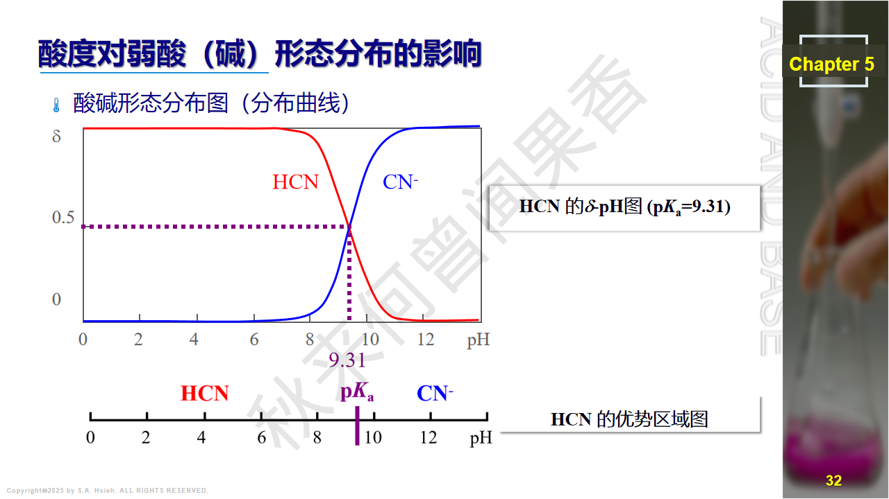
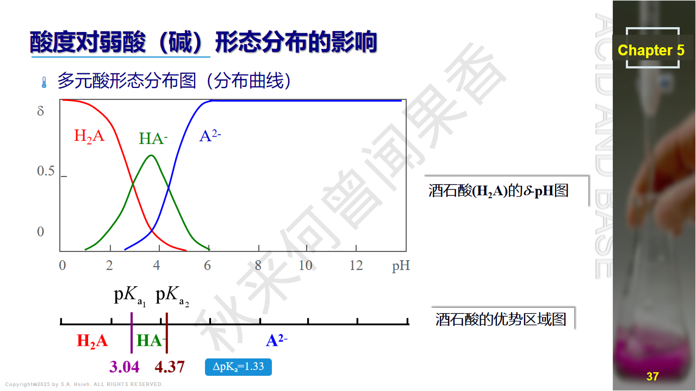
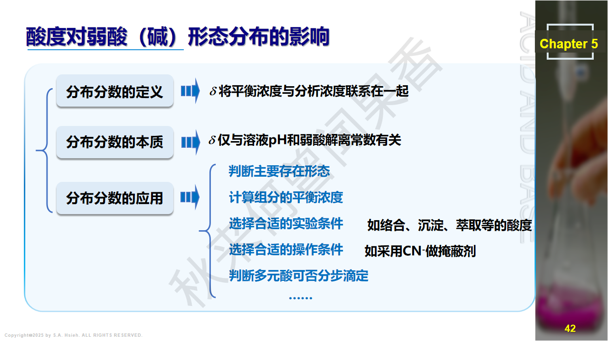
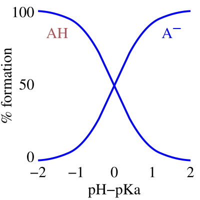
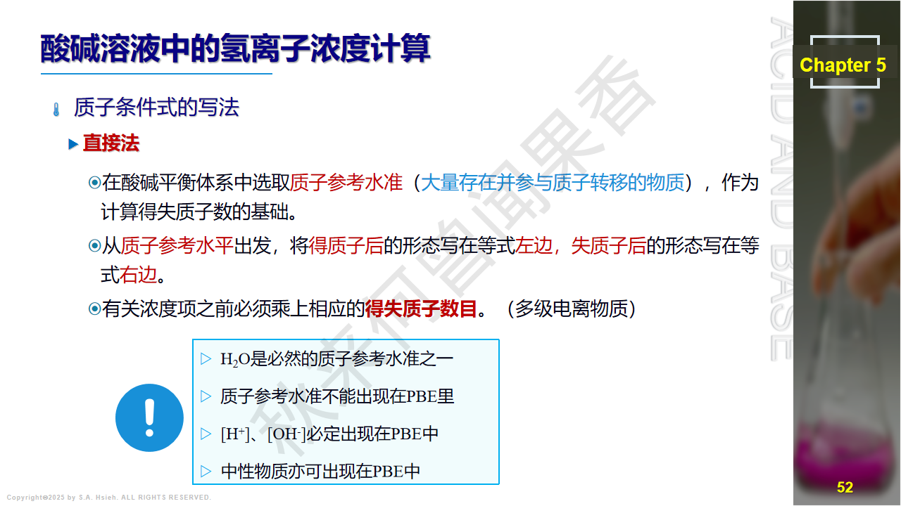

PPT: 酸碱反应及其平衡常数

PPT：常见离子活度系数表（25°C，不同离子强度下）

PPT：活度常数 Ka、浓度常数 Kac、混合常数 KaM 对比
在真实溶液中，离子间的静电作用使其有效浓度(活度)低于实际浓度。活度 $a$ 与浓度 $c$ 的关系为：
$$a = \gamma \cdot c$$其中 $\gamma$ 为活度系数（无量纲），$0 < \gamma \leq 1$。在无限稀释溶液中 $\gamma \to 1$，$a \to c$。
离子强度 $I$ 描述溶液中离子氛的强弱：
$$I = \frac{1}{2}\sum c_i z_i^2$$其中 $c_i$ 为第 $i$ 种离子的摩尔浓度，$z_i$ 为其电荷数。
适用于离子强度较低的稀溶液。离子电荷越高、离子强度越大，$\gamma$ 越小。
扩展Debye-Huckel公式（$I < 0.2$）：
$$\lg \gamma_i = \frac{-0.512\, z_i^2 \sqrt{I}}{1 + \alpha B \sqrt{I}}$$其中 $\alpha$ 为离子有效半径（pm），$B$ 为常数。
酸失去质子后变成共轭碱，碱得到质子后变成共轭酸，形成共轭酸碱对。
要点：质子理论中，酸碱不限于分子，离子也可以是酸或碱。同一物质在不同反应中可以扮演不同角色（如 $\text{H}_2\text{O}$）。
| 酸 (Acid) | 共轭碱 (Conjugate Base) | 说明 | |
|---|---|---|---|
| $\text{HCl}$ | $\rightleftharpoons$ | $\text{Cl}^-$ | 强酸，共轭碱极弱 |
| $\text{HAc}$ | $\rightleftharpoons$ | $\text{Ac}^-$ | 弱酸，$pK_a=4.74$ |
| $\text{HCOOH}$ | $\rightleftharpoons$ | $\text{HCOO}^-$ | 甲酸，$pK_a=3.75$ |
| $\text{NH}_4^+$ | $\rightleftharpoons$ | $\text{NH}_3$ | 铵根是酸！$pK_a=9.25$ |
| $\text{H}_3\text{PO}_4$ | $\rightleftharpoons$ | $\text{H}_2\text{PO}_4^-$ | 磷酸第一步，$pK_{a1}=2.12$ |
| $\text{H}_2\text{PO}_4^-$ | $\rightleftharpoons$ | $\text{HPO}_4^{2-}$ | 磷酸第二步，$pK_{a2}=7.20$ |
| $\text{HPO}_4^{2-}$ | $\rightleftharpoons$ | $\text{PO}_4^{3-}$ | 磷酸第三步，$pK_{a3}=12.36$ |
| $\text{H}_2\text{CO}_3$ | $\rightleftharpoons$ | $\text{HCO}_3^-$ | 碳酸第一步，$pK_{a1}=6.37$ |
| $\text{HCO}_3^-$ | $\rightleftharpoons$ | $\text{CO}_3^{2-}$ | 碳酸第二步，$pK_{a2}=10.25$ |
| $\text{H}_2\text{O}$ | $\rightleftharpoons$ | $\text{OH}^-$ | 水作为酸 |
| $\text{H}_3\text{O}^+$ | $\rightleftharpoons$ | $\text{H}_2\text{O}$ | 水作为碱的共轭酸 |
| $\text{H}_2\text{C}_2\text{O}_4$ | $\rightleftharpoons$ | $\text{HC}_2\text{O}_4^-$ | 草酸第一步，$pK_{a1}=1.25$ |
| $\text{HC}_2\text{O}_4^-$ | $\rightleftharpoons$ | $\text{C}_2\text{O}_4^{2-}$ | 草酸第二步，$pK_{a2}=4.27$ |
$\text{HPO}_4^{2-}$ 的共轭酸是什么？
答：$\text{HPO}_4^{2-}$ 得到一个质子变为 $\text{H}_2\text{PO}_4^-$，所以其共轭酸为 $\text{H}_2\text{PO}_4^-$。
注意：不是 $\text{H}_3\text{PO}_4$！共轭酸碱对之间只差一个质子。$\text{H}_3\text{PO}_4$ 是 $\text{H}_2\text{PO}_4^-$ 的共轭酸。
即：
$$pK_a + pK_b = pK_w = 14.00 \quad (25°\text{C})$$酸越强（$K_a$ 越大），其共轭碱越弱（$K_b$ 越小），反之亦然。
常见共轭酸碱对的 $K_a$、$K_b$ 对照：
| 共轭酸 | $pK_a$ | 共轭碱 | $pK_b$ |
|---|---|---|---|
| $\text{NH}_4^+$ | 9.25 | $\text{NH}_3$ | 4.75 |
| $\text{HAc}$ | 4.74 | $\text{Ac}^-$ | 9.26 |
| $\text{HCOOH}$ | 3.75 | $\text{HCOO}^-$ | 10.25 |
| $\text{HCO}_3^-$ | 10.25 | $\text{CO}_3^{2-}$ | 3.75 |
| $\text{H}_2\text{PO}_4^-$ | 7.20 | $\text{HPO}_4^{2-}$ | 6.80 |
验证：每一行 $pK_a + pK_b = 14.00$。
两性物质（amphoteric substance）既可作为酸也可作为碱。例如：
| 温度 / °C | $K_w$ | $pK_w$ |
|---|---|---|
| 0 | $0.114 \times 10^{-14}$ | 14.94 |
| 15 | $0.451 \times 10^{-14}$ | 14.35 |
| 25 | $1.01 \times 10^{-14}$ | 14.00 |
| 37 | $2.40 \times 10^{-14}$ | 13.62 |
| 50 | $5.47 \times 10^{-14}$ | 13.26 |
| 100 | $5.50 \times 10^{-13}$ | 12.26 |

PPT: 弱酸各型体的分布分数

PPT：一元弱酸 HF 的 δ-pH 图和优势区域图（pKa=3.17）

PPT：二元酸 H₂CO₃ 的 δ-pH 图（pKa1=6.38, pKa2=10.25）

PPT：思考题——当 [H₂A]=[A²⁻] 时 pH=?

PPT: 分布分数计算示例
一元弱酸分布分数图（δ vs pH）

图示：随 pH 升高，HA 型体（酸式）减少，A⁻ 型体（碱式）增多；交叉点 pH = pKₐ 时 δ(HA) = δ(A⁻) = 0.5
推导过程：
定义分析浓度 $c = [\text{HA}] + [\text{A}^-]$（物料守恒），以及 $K_a = \dfrac{[\text{H}^+][\text{A}^-]}{[\text{HA}]}$。
由 $K_a$ 表达式得 $[\text{A}^-] = \dfrac{K_a \cdot [\text{HA}]}{[\text{H}^+]}$，代入物料守恒：
$$c = [\text{HA}] + \frac{K_a \cdot [\text{HA}]}{[\text{H}^+]} = [\text{HA}]\left(1 + \frac{K_a}{[\text{H}^+]}\right) = [\text{HA}] \cdot \frac{[\text{H}^+] + K_a}{[\text{H}^+]}$$因此：
$$\delta_{\text{HA}} = \frac{[\text{HA}]}{c} = \frac{[\text{H}^+]}{[\text{H}^+] + K_a}$$ $$\delta_{\text{A}^-} = \frac{[\text{A}^-]}{c} = \frac{K_a}{[\text{H}^+] + K_a}$$验证：$\delta_{\text{HA}} + \delta_{\text{A}^-} = \dfrac{[\text{H}^+] + K_a}{[\text{H}^+] + K_a} = 1$ ✓
关键特征：
HCOOH 溶液在 pH = $pK_a$ 时，$\delta(\text{HCOOH}) = \delta(\text{HCOO}^-) = 0.50$。
即甲酸在 pH = $pK_a$(HCOOH) = 3.75 时，分子形式与离子形式各占 50%。这是一元酸分布分数的基本结论。
推导过程：
物料守恒：$c = [\text{H}_2\text{A}] + [\text{HA}^-] + [\text{A}^{2-}]$
平衡常数：$K_{a1} = \dfrac{[\text{H}^+][\text{HA}^-]}{[\text{H}_2\text{A}]}$，$K_{a2} = \dfrac{[\text{H}^+][\text{A}^{2-}]}{[\text{HA}^-]}$
以 $[\text{HA}^-]$ 为基准，用 $h = [\text{H}^+]$ 表示其他物种：
$$[\text{H}_2\text{A}] = \frac{h \cdot [\text{HA}^-]}{K_{a1}}, \quad [\text{A}^{2-}] = \frac{K_{a2} \cdot [\text{HA}^-]}{h}$$代入物料守恒并以 $[\text{H}_2\text{A}]$ 为基准：
$$[\text{HA}^-] = \frac{K_{a1}}{h}[\text{H}_2\text{A}], \quad [\text{A}^{2-}] = \frac{K_{a1}K_{a2}}{h^2}[\text{H}_2\text{A}]$$ $$c = [\text{H}_2\text{A}]\left(1 + \frac{K_{a1}}{h} + \frac{K_{a1}K_{a2}}{h^2}\right) = [\text{H}_2\text{A}] \cdot \frac{h^2 + hK_{a1} + K_{a1}K_{a2}}{h^2}$$令分母 $D = h^2 + h K_{a1} + K_{a1} K_{a2}$，则：
$$\delta_{\text{H}_2\text{A}} = \frac{h^2}{D}$$ $$\delta_{\text{HA}^-} = \frac{h \cdot K_{a1}}{D}$$ $$\delta_{\text{A}^{2-}} = \frac{K_{a1} K_{a2}}{D}$$验证：$\delta_{\text{H}_2\text{A}} + \delta_{\text{HA}^-} + \delta_{\text{A}^{2-}} = \dfrac{h^2 + hK_{a1} + K_{a1}K_{a2}}{D} = 1$ ✓
推导思路：与二元酸类似，物料守恒 $c = [\text{H}_3\text{A}] + [\text{H}_2\text{A}^-] + [\text{HA}^{2-}] + [\text{A}^{3-}]$，用 $h=[\text{H}^+]$ 将所有浓度表示为 $[\text{H}_3\text{A}]$ 的函数：
$$[\text{H}_2\text{A}^-] = \frac{K_{a1}}{h}[\text{H}_3\text{A}], \quad [\text{HA}^{2-}] = \frac{K_{a1}K_{a2}}{h^2}[\text{H}_3\text{A}], \quad [\text{A}^{3-}] = \frac{K_{a1}K_{a2}K_{a3}}{h^3}[\text{H}_3\text{A}]$$令 $D = h^3 + h^2 K_{a1} + h K_{a1}K_{a2} + K_{a1}K_{a2}K_{a3}$
$$\delta_{\text{H}_3\text{A}} = \frac{h^3}{D}$$ $$\delta_{\text{H}_2\text{A}^-} = \frac{h^2 K_{a1}}{D}$$ $$\delta_{\text{HA}^{2-}} = \frac{h \cdot K_{a1}K_{a2}}{D}$$ $$\delta_{\text{A}^{3-}} = \frac{K_{a1}K_{a2}K_{a3}}{D}$$$\text{H}_3\text{PO}_4$：$pK_{a1}=2.12$，$pK_{a2}=7.20$，$pK_{a3}=12.36$
$\text{H}_2\text{PO}_4^-$ 的最大值在 $\text{pH} = (2.12+7.20)/2 = 4.66$
$\text{HPO}_4^{2-}$ 的最大值在 $\text{pH} = (7.20+12.36)/2 = 9.78$
$\text{H}_3\text{PO}_4$ 分布图特征描述：
题目：$\text{H}_2\text{PO}_4^-$ 的分布分数最大值出现在 pH 等于多少？
答：$\text{pH} = \dfrac{pK_{a1} + pK_{a2}}{2} = \dfrac{2.12 + 7.20}{2} = 4.66$
这是中间形体分布分数最大的通用规律。
$h = 10^{-4.66} = 2.19 \times 10^{-5}$ mol/L
$K_{a1} = 10^{-2.12} = 7.59 \times 10^{-3}$，$K_{a2} = 10^{-7.20} = 6.31 \times 10^{-8}$，$K_{a3} = 10^{-12.36} = 4.37 \times 10^{-13}$
计算分母 $D$ 各项：
$$h^3 = (2.19\times10^{-5})^3 = 1.05 \times 10^{-14}$$ $$h^2 K_{a1} = (2.19\times10^{-5})^2 \times 7.59\times10^{-3} = 3.64 \times 10^{-12}$$ $$h K_{a1}K_{a2} = 2.19\times10^{-5} \times 7.59\times10^{-3} \times 6.31\times10^{-8} = 1.05 \times 10^{-14}$$ $$K_{a1}K_{a2}K_{a3} = 7.59\times10^{-3} \times 6.31\times10^{-8} \times 4.37\times10^{-13} = 2.09 \times 10^{-22}$$$D \approx 1.05\times10^{-14} + 3.64\times10^{-12} + 1.05\times10^{-14} + 2.09\times10^{-22} \approx 3.66 \times 10^{-12}$
$\delta(\text{H}_2\text{PO}_4^-) = \dfrac{h^2 K_{a1}}{D} = \dfrac{3.64\times10^{-12}}{3.66\times10^{-12}} \approx 0.994$
即在 pH = 4.66 时，$\text{H}_2\text{PO}_4^-$ 占总磷酸浓度的 99.4%，几乎是唯一的存在形式。这是因为 $K_{a1}/K_{a2} = 10^{5.08} \gg 1$，两步电离充分分开。
令 $h = [\text{H}^+]$，分母 $D = h^n + K_{a1}h^{n-1} + K_{a1}K_{a2}h^{n-2} + \cdots + K_{a1}K_{a2}\cdots K_{an}$
$$\delta_{\text{H}_n\text{A}} = \frac{h^n}{D}$$ $$\delta_{\text{H}_{n-1}\text{A}^-} = \frac{K_{a1} \cdot h^{n-1}}{D}$$ $$\vdots$$ $$\delta_{\text{HA}^{(n-1)-}} = \frac{K_{a1}K_{a2}\cdots K_{a,n-1}\cdot h}{D}$$ $$\delta_{\text{A}^{n-}} = \frac{K_{a1}K_{a2}\cdots K_{an}}{D}$$验证：$\delta_{\text{H}_n\text{A}} + \delta_{\text{H}_{n-1}\text{A}^-} + \cdots + \delta_{\text{A}^{n-}} = 1$

PPT: 质子条件式(PBE)的书写

PPT：间接法写 PBE（MBE + CBE → 消去非质子转移项 → PBE）
PBE（Proton Balance Equation）的本质：溶液中质子的得失守恒。从参考水准出发，得到质子的总量 = 失去质子的总量。
题目：写出 $\text{NaHCO}_3$ 溶液的质子条件式。
答：$[\text{H}_2\text{CO}_3] + [\text{H}^+] = [\text{CO}_3^{2-}] + [\text{OH}^-]$
这是最经典的两性物质PBE，必须背熟！
注意 $[\text{H}_3\text{PO}_4]$ 系数为2（比参考水准多得了2个质子）。
题目：写出 $\text{Na}_2\text{HPO}_4$ 溶液的质子条件式。
答：$[\text{H}^+] + 2[\text{H}_3\text{PO}_4] + [\text{H}_2\text{PO}_4^-] = [\text{OH}^-] + [\text{PO}_4^{3-}]$
注意：此处易错点是 $[\text{H}_3\text{PO}_4]$ 的系数。从 $\text{HPO}_4^{2-}$ 到 $\text{H}_3\text{PO}_4$ 得到 2 个质子，所以系数为 2，不能漏写！
左边是所有得质子产物（包括 $\text{H}_2\text{O}$ 得质子产生的 $\text{H}^+$），右边是 $\text{H}_2\text{O}$ 失质子产生的 $\text{OH}^-$。
这个PBE非常对称。因为 $\text{NH}_4^+$ 和 $\text{Ac}^-$ 分别是酸和碱，一个失质子一个得质子。
但这里有个关键：NaOH 提供的 $\text{OH}^-$ 是参考水准的一部分，所以"额外"产生的 $\text{OH}^-$ 已包含在参考水准中。
正确的PBE是：由电荷守恒和物料守恒推导，或直接考虑质子得失：
$$[\text{HAc}] + [\text{H}^+] = [\text{OH}^-] - c_b$$移项得（这里 $c_b$ 是 NaOH 浓度）：
$$c_b + [\text{HAc}] + [\text{H}^+] = [\text{OH}^-]$$即 NaOH 提供的碱性 + HAc 得质子产生的 = 多余的 OH$^-$。
题目：NaOH 与 NaAc 混合溶液的质子条件式。
答：$c_b + [\text{HAc}] + [\text{H}^+] = [\text{OH}^-]$
其中 $c_b$ 为 NaOH 的浓度。此题要求理解：当溶液中有强碱存在时，PBE 中需要体现强碱贡献的碱度。
等价方法：选择 $\text{HCO}_3^-$ 和 $\text{H}_2\text{O}$ 为参考水准（忽略 $\text{Na}_2\text{CO}_3$ 中多余的碱度），考虑 $\text{Na}_2\text{CO}_3$ 贡献的 $\text{CO}_3^{2-}$ 相当于"失质子"产物：
$$[\text{H}_2\text{CO}_3] + [\text{H}^+] = [\text{CO}_3^{2-}] - c_1 + [\text{OH}^-]$$即：
$$[\text{H}_2\text{CO}_3] + [\text{H}^+] + c_1 = [\text{CO}_3^{2-}] + [\text{OH}^-]$$此处的 $c_1$ 体现了 $\text{Na}_2\text{CO}_3$ 多提供的碱度。